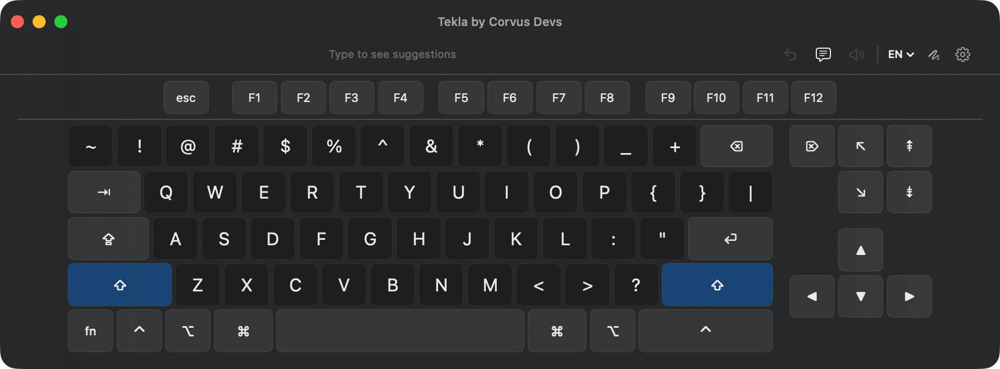

Swipe to type on macOS
A floating virtual keyboard with swipe-to-type, smart predictions, and support for 14 languages. Fully offline. Fully private.
Download Free Trial Free for 14 days, then $2.99. Requires macOS 14 Sonoma or later.A floating virtual keyboard with swipe-to-type, smart predictions, and support for 14 languages. Fully offline. Fully private.
Download Free Trial Free for 14 days, then $2.99. Requires macOS 14 Sonoma or later.Swipe-to-type, smart predictions, a function row, and a navigation cluster, all in a resizable window that stays out of your way.

Slide your finger or pointer across letters to type words instantly. Geometric scoring and Bayesian ranking find the right word every time.
Context-aware predictions powered by bigram language models and frequency data. The more you type, the better it gets.
Full keyboard layouts and prediction data for English, Spanish, German, French, Portuguese, Italian, and 8 more languages.
No internet required. No data leaves your Mac. Your typing patterns, predictions, and preferences stay entirely on your device.
Complete Mac keyboard with function keys, modifier keys, and navigation cluster. Resizable floating window that works with any app.
Near-zero CPU when idle. Event-driven architecture means it only works when you do. No background polling, no battery drain.
Designed for users with limited hand mobility. Swipe typing lets you form words with a single continuous gesture instead of pressing individual keys.
Works with trackpads, mice, styluses, head pointers, and any pointing device. The resizable floating window adapts to your setup.
Smart predictions and next-word suggestions mean you type less to say more. Swipe a word, pick a prediction, full sentences with minimal effort.
A floating keyboard appears on screen. Grant Accessibility permission so it can type into any app.
Slide across letters to swipe-type whole words, or tap individual keys like a regular keyboard.
Smart predictions update in real-time as you type or swipe. Tap a prediction to insert it instantly.
A full floating keyboard on screen, driven by any pointing device. No hardware keyboard required, no extra desk space taken.
Built for the Mac, not ported from somewhere else. A light, resizable window that floats above every app.
No account, no telemetry, no network. Your typing, predictions, and language data never leave your Mac.
Requires macOS 14 Sonoma or later
Privacy-first apps for macOS, iOS, and Safari.